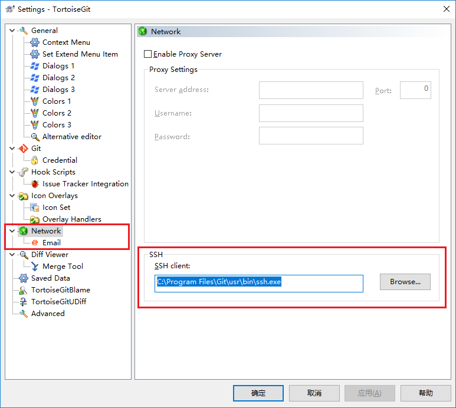

Github是开源生态圈中一个重要的代码仓库，个人可以创建公开项目，付费后可以创建私有项目。
Gitee是国内一个代码仓库，个人可免费创建私有项目，本人的博客源码暂时落地在Gitee仓库。
之前一直使用TortoiseSVN工具，本文下面介绍一下如何使用ToroiseGit连接Github和Gitee仓库。
安装软件
- 安装Git 工具
- 安装Tortoise
生成SSH
1 | ssh-keygen -t rsa -C "chenhjcs@163.com" |
配置Github的公钥
Github中打开用户的个人设置（Personal Setting）-> SSH 和 GPG秘钥管理（SSH and GPG keys）。
将公钥添加至SSH Keys中，将demo.pub中内容拷贝至秘钥（key）文本框中。
在命令终端中输入
ssh -T git@github.com
返回以下信息，即表示git客户端权限集成成功
Hi 用户! You’ve successfully authenticated, but GitHub does not provide shell access.
配置Gitee的公钥
Gitee中打开用户的基本设置 -> 安全设置 -> SSH 公钥。
将公钥demo.pub中内容拷贝至公钥文本框中。
在命令终端中输入
ssh -T git@gitee.com
返回以下信息，即表示git客户端权限集成成功
Welcome to Gitee.com, 用户名!
配置 Tortoise
上述配置完成后，使用Git命令结合进行代码管理。
习惯使用海龟的同学，可以在ToroiseGit->Settings->Network中，修改SSH Client工具即可。
C:\Program Files\Git\usr\bin\ssh.exe
